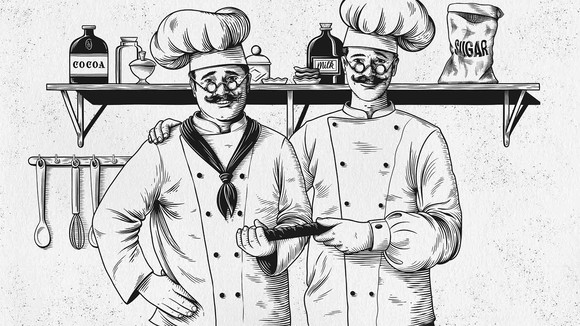
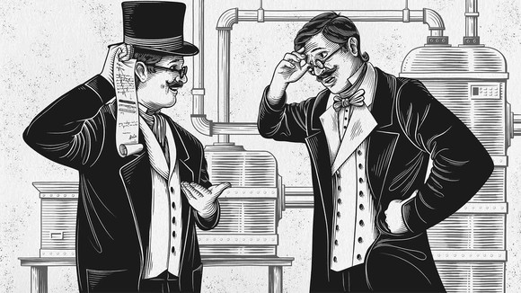
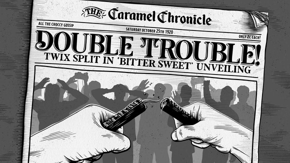
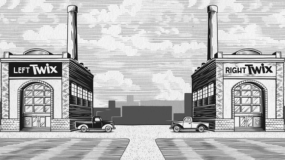
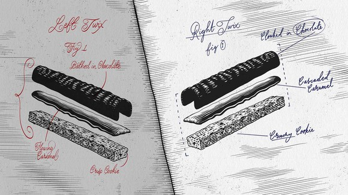
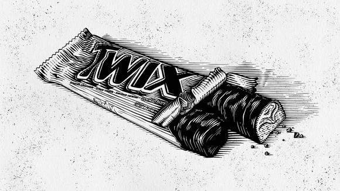
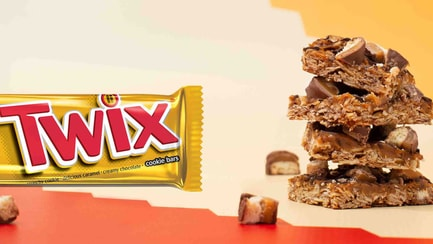
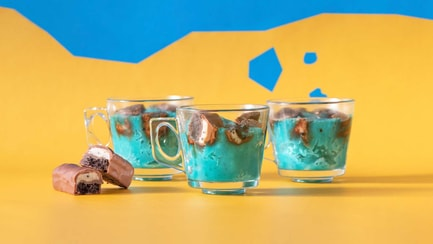

A story of passion, craftsmanship and feuds, the history of TWIX® is driven with drama.
Birth of a phenomenon
TWIX wasn’t always divided into Left and Right. Once upon a time, brothers Earl and Seamus were united by an extraordinary idea: to combine cookie, caramel and chocolate into one beautiful bar.
The cracks begin to show
But even as they developed their big idea, their differences were evident. Both perfectionists, Seamus and Earl clashed on everything from chocolate-pouring technique to caramel consistency.
Schism of the century
The final straw came at the Grand Unveiling of their new TWIX bar. Tensions reached a breaking point and the bar snapped. So too did the brothers’ tempers and the occasion quickly descended into fisticuffs. Unable to reach an agreement and with neither willing to give way, the brothers had no choice: they had to divide the company.
The great factory buildings
Earl rode away as far as possible to establish his enterprise, but found himself only yards from Seamus’s chosen plot. Each designed a unique building to house his factory, and each sneered at the mediocrity of the factory opposite.
A drive for perfection
The two took distinctively different approaches to the manufacture of chocolate, finally able to do it their own way. Left TWIX® became a crunchy cookie base upon which caramel was flowed before being bathed in chocolate. Meanwhile Right TWIX® was a cascade of caramel on a crisp cookie base, cloaked in chocolate.
Together once more
Seamus and Earl were destined never to reconcile. And although a handful of wrappers from their time as partners still remain to this day, never again would a Left and a Right TWIX sit beside one another.
Pick a side
Explore Twix. Twice.
Do you lean to the Left TWIX® or run to the Right TWIX®? Time to decide.
Explore more
Recipes with Twix®
This delicious, easy-to-make recipe works with Right TWIX® too!
 Make itYou can also make this simple, tasty recipe with Left TWIX®!
 Bake itHaven't been left with the right answers?
From our ingredients to our ethics, we love to answer your questions about Twix®.
Help & Contact us